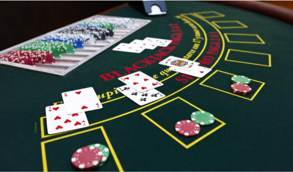

Atividade de Matematica
A atividade mais interessante de matematica, foi uma atividade para praticar a contagem de cartas no 21, tambem conhecido como Blackjack
a ideia principal é obter o conhecimento das chances de se obter cada carta, para se somar 21, temos inumeras formas de compreender e se raciocinar a estrategia para sempre obter 21 na soma de cartas
